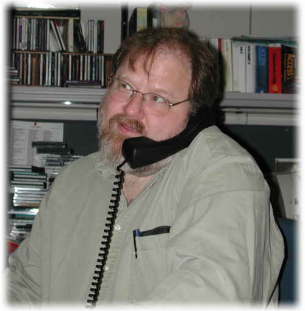

Past
Volunteer


Past Volunteer |
|
|
 |
I started professionally with MUMPS and the VA in 1984 (hired by Greg Kreis) at the |
| Art Smith
SmithAB@missouri.edu |
Hardhats.Org also thanks the Chairman of the MUMPS Development Committee, Art Smith, and the University of Missouri Veterinary Medical Teaching Hospital, for allowing us to link to files stored at their computer site. |
| Jule Meyn | I started working in M in
1972, using MIIS in a clinical laboratory environment. I progressed through
old MIIS -> DEC-11 Mumps -> DSM -> new MIIS -> Meditech MAGIC
(!). I worked for Compucare for 10 years doing most of what M can do; developed
their IS250 terminal emulator in 808x AL. Extensive background in Fortran
and various ALs as well as M.
Fell in love with the relational model about 3 years ago, and started enabling M databases for SQL using KB Systems Inc. KB_SQL product. Then fell in love with FileMan (Lord help me). Wrote a fully automatic mapper of FM data dictionary to KB_SQL data dictionary, which is in production at 6 VA sites. Also wrote an automatic mapper for IDX, which is in production at one site. Have experience interfacing M to Oracle through the Oracle Transparent Gateway. Have demonstrated M access from Excel, Access and SQL Query through ODBC on PCs, RS600s and Alphas. I have a contract with the DVA to produce a standard SQL projection of FileMan to facilitate mapping to SQL, thence to ODBC. Testing of this product will be conducted at 3 VA sites early in 1997; KB Systems and InterSystems Corp. will participate. |
|
Pat did a huge amount of work in getting Hardhats open in 1997. Without her artful and dedicated labors, this site would not have been possible. |
I received my B.S. degree in Mathematics from
Indiana University of Pa. in 1977 with a minor in computer science. After
graduation, I started to work for Consolidated Natural Gas Co. in Clarksburg,
WV. There, I programmed in Fortran and Cobol using TSO's to log onto an
IBM mainframe. In 1983, I started a new career with Valley Mental Health
Center in Morgantown, WV where I continued to program in Cobol using a Burroughs
1860 system. My main responsibility there was to develop and maintain a
3rd party billing system. Before leaving Valley MHC, the agency
switched to a TI CMHC System. I was responsible for the conversion.
In 1986, I was hired at West Virginia University for the WVU Library Systems. There, I was in charge of all library accounts and programming for all staff members. Hardware consisted of in-house PC's and IBM and DEC mainframes maintained in another location on the University. Software varied from PC software to WYLBUR, VM/CMS, VAX/VMS, PL/I, dBASE, C, and SPIRES DBMS to name a few. The biggest project and challenge was PAS (Pat's Acquisition System) where I designed a financial accounting system for the Acquisitions Department of the library system. PAS monitored budgeting and bibliographic information for library materials for all departments of WVU. (This also became my thesis work.) While working at WVU, I pursued a masters degree in Computer Science. The classes exposed me to many programming languages, including PL/I, C, C++, Ada, SmartTalk, Oracle, and SQL. It took 6 years to get my degree, but in 1994, I finally had my M.S. in computer science. In 1991, I was hired by WV CONSULT at WVU and continue to work for them. Our department is small, now only 3 people, and I am currently Acting Director as well as the lead Systems Programmer/Analyst. It is here where I became exposed to MUMPS and fell in love with the language. Our project started out on a Micro VAX using DSM. Since then, we've switched to an NCR 3430 UNIX platform running MSM/UNIX. My duties here are many. I am the System Administrator for the CONSULT Network, which includes administrating the UNIX server and the Cisco Router. I am responsible for installing and maintaining System V, MSM, VA DHCP, NCSA's httpd, and any other public domain software installed on our server. My newest contribution to the project was to Migrate our M databases to the WWW and provide Web access for our end-users. I have been an active member of MTA since 1993. |
Search | Home | MUMPS | Fileman | Kernel | C/S, Mailman, Web | Programmer Tools | Applications